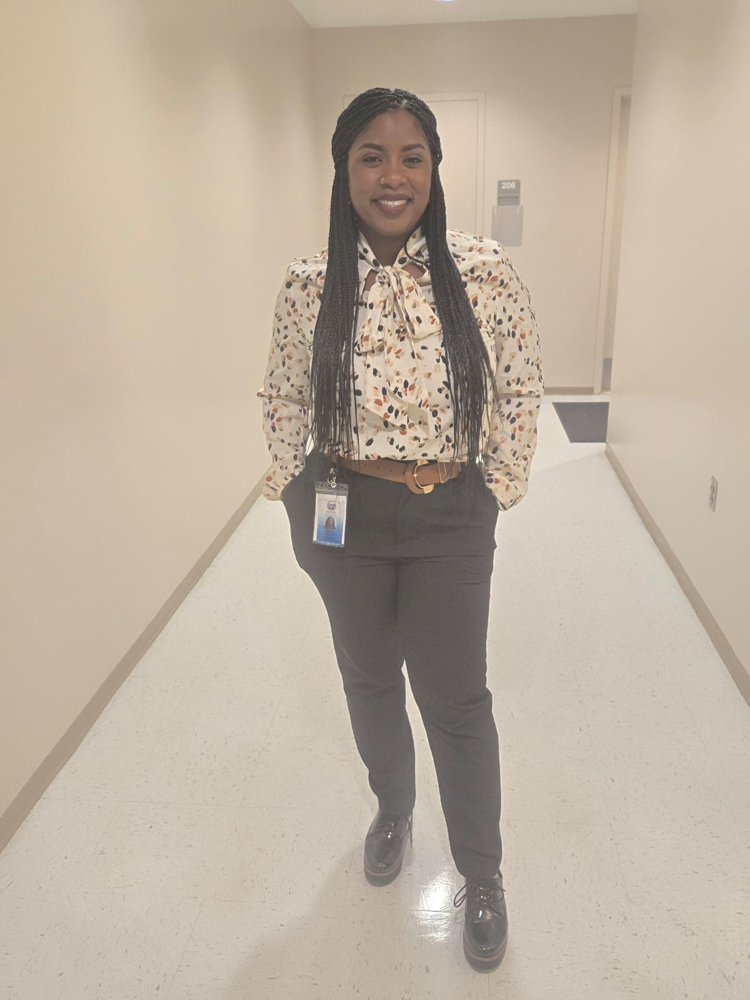
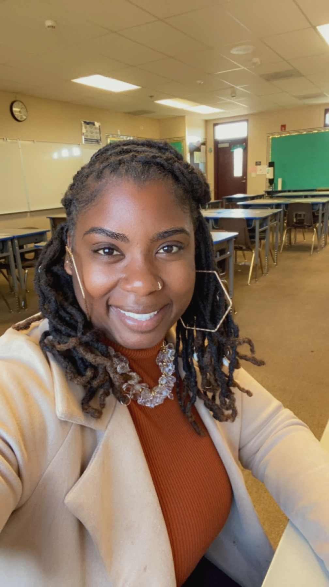

A culminating experience in counseling dedicated to advocacy, equity, and empowering the next generation through compassion and critical consciousness.


M.S. Counseling • CSUSB Class of 2026
Before stepping into the world of counseling, I earned my Bachelor of Arts in Sociology with a concentration in Social Service and Community Research from California State University, San Bernardino—building a strong academic foundation in understanding the systems that shape people’s lives and the communities that sustain them.
What drew me to counseling was deeply personal. Growing up, my high school counselor and math teacher played pivotal roles in my development during adolescence, giving me the guidance and belief that I carry to this day. I wanted to give that same gift to the young people coming behind me—to show up for them the way someone showed up for me.
I am most passionate about serving youth in Title I schools, specifically young people in underserved and urban communities who deserve every opportunity to thrive. My post-graduation goals are to work as a K–12 school counselor while pursuing licensure to become a Licensed Professional Clinical Counselor.
Above all, I am a believer in Christ, a devoted wife and mother who treasures family and friendships. When I’m not in the counseling office, you’ll find me on a walking trail, lost in a good novel, or singing my heart out.
“Every student needs just one person to believe in them to keep striving.”Amenda Penigar
Walking into my next chapter as a counselor and what I would like to refer to as a change agent, I carry the core values instilled in me during my three years in the counseling program, along with the internships that have shaped my commitment. While my personal values emphasize social justice and equity, my counseling practice is grounded in the ethical standards set forth by the American School Counselor Association (ASCA), particularly A.1.a., which calls for promoting the welfare and success of all students through equitable and inclusive practices. My desire is to create change for students in the K–12 system while upholding the ASCA standards with integrity.
I will use counseling techniques, such as motivational interviewing, small group facilitation, and individual counseling, to promote a strong, goal-oriented, student-centered approach. I am fighting for advocacy, social justice, policy change, and raising awareness of racism and socio-economic disparities by facilitating student-centered groups, collaborating with educators to promote equitable practices, and creating spaces where students can process the impact of social and political issues. I am, in fact, a change agent. One who comes to even the score for those who don’t have a voice or are afraid to speak up against injustices.
I will not support stagnant practices, such as strictly teacher-centered instruction, lack of student voice, rigid curriculum that ignores culture and identity, and environments where students are discouraged from self-expression, as these approaches are inconsistent with culturally responsive teaching and social justice counseling frameworks that emphasize equity, inclusion, and student empowerment.
I am anchored in providing care to those who are oppressed by systemic inequalities, implicit biases, and unresolved personal matters of the heart. Serving those in my community or simply those who are in my care will forgo any other duty. I will be present and show up wholeheartedly, despite the challenges that come with pushing me to be open to new approaches. I dedicate myself to remaining a student in every role I play, so I can learn and deconstruct harmful behavior in the spaces I occupy.
My counseling approach is progressive and grounded in client-centered theory (Rogers, 1951), which allows students to explore different ways to learn, express emotions, and develop emotional intelligence. I will ensure to tackle uncomfortable spaces with grace, compassion, with a mind willing to fight as long as I fight the problem at hand. My ability to manifest consciousness in my counseling practice will significantly change the trajectory of many lives for the better.
I will forever hold a capacity for social and emotional awareness and provide tentative language to those who may feel emotions but can’t articulate how those emotions have contributed to their experience. My professional pedagogy will enable me to create cultural awareness workshops for families in the community, teaching them to identify discrimination, unsafe places, and even unsafe people. I have facilitated small groups so students can have a voice when political climates create conflicting emotions, like having to worry about their families’ well-being or getting an education.
I have engaged with educators through collaboration to raise awareness of how the outside world affects students before instruction begins and before students are expected to perform academically. This provides students with additional support and empathy from their teachers. It is my desire to host district-level training to equip school personnel to work cohesively and ensure that students are heard and feel safe. Through these indirect services, students will be supported on social-emotional and academic levels.
My student-centered approach can provide educational excellence by indirectly supporting students at the district level and attending to their needs. Providing one-on-one counseling to my students who are conflicted about home and school priorities will be most urgent for me, because I understand the intersection of personal struggles related to home, such as financial burdens, emotional support, or a lack thereof. It is my personal conviction to provide calming centers, quiet spaces, and counseling.
I have used motivational interviewing numerous times, which involves entering my students’ space with a student-centered approach, allowing students to be heard with no expectations of saying or doing the “right thing.” I have built rapport and allowed my care and authenticity to speak in the space. My students have confidently come to me to talk about needing help managing negative thoughts about themselves and developing plans to reach their goals, informed by Cognitive Behavioral Therapy (Beck, 1976). I have collaborated with colleagues to support students’ emotional needs, informed by consultation practices within school counseling that emphasize collaborative problem-solving and shared responsibility.
I will continuously be aware of and culturally sensitive to the political climate, which could harm the families, communities, and clients I serve. The intersection of global political climates and service is highly impactful and life-changing, so I dedicate my service to finding remedies to heal broken beliefs in a system meant to protect and serve. I will acknowledge and stand with those who feel disenfranchised and lack the courage to speak out about their displacement.
I will never sit passively while a life-changing event affects my students, community, and families, especially without educating myself. I am highly aware and equipped to advocate for intentional disadvantages. A recent event that has directly impacted my students and school community is the increased presence of immigration enforcement, including the deportation of immigrant children, women, and men, and the separation of families across the United States. I collaborated with administration and counselors to create a time when students could come in to discuss the impact this life-altering event has had on students whose families fled from countries that did not provide this protection and justice.
I have provided counseling services that allow students and communities to be flexible and grow, and I have fostered healthy relationships with students and parents because I care about the well-being of others. It is my deepest desire to continue fostering organic relationships and even facilitate events that allow students, the community, and colleagues to network and connect with others who resonate with and share their experiences. Throughout this two-year internship, I have counseled a host of students and provided them with reliable, tangible tools, such as teaching a student how to email their teacher about their grades and encouraging them to include their counselor to feel supported. I have allowed learning curves to challenge and stretch me. I will continue to approach my counseling with gentleness and treat everyone in close proximity to me with kindness and respect. I have made it my mission to go above and beyond for those seeking assistance in any capacity.
When I started the counseling program in 2023, I thought that I knew what diversity meant. I believed it was simply about having people of different shades working within a company so everyone felt included. Fast forward to today, and I realize that I only had a small glimpse of a bigger issue. I never thought to consider matters like socioeconomic status, individuals with disabilities, gender and sexuality, foster and adopted children, or even culture as diversity. I have learned that these components create systemic barriers that make it impossible for people to thrive, be seen, and even be successful.
Obligations that required this type of transformation derived from working with students during my internships, who had their own diverse stories. It required me to have a strong sense of awareness that I knew nothing of, but wanted to provide. I wanted to provide resources that would change the trajectory of their lives, including those of their family and community. I learned that being in spaces that are not welcoming to aspects like your primary language, heritage, culture, and skin color can be exclusionary. It is for this very reason that I will center my counseling on inclusivity.
I resonated with being excluded, which is how I came to serve those who were not considered equal due to discrimination and personal biases socially. I plan to draw from my own emotions of emptiness, loneliness, abuse of race, and isolation to deepen my empathy, resilience, and advocacy in my practice.
I know the feeling very well of not having an aware sense of belonging in places I was invited to be in, such as sitting at tables that were supposed to be diverse—meaning, having representation of multiple races and cultures to draw from and collaborate with the intent of inclusion. Instead, I experienced being overlooked, unaddressed, and my ideas were not implemented. I learned that the Black face in that space was only tolerated and used as a prop to address matters, and even the people of the Black and brown communities.
For example, during a meeting with a group of counselors about student attendance, I raised the issue that poverty directly affects children’s ability to get to school. I then explained that without reliable transportation like a car, some parents simply couldn’t get their children to school on time, or even at all. This dismissal made me realize how deeply systemic inequalities like poverty were not being addressed even by those in position to influence policy. That experience helped me gain a deeper passion for advocating for the underserved. It also made me speak boldly when addressing structural barriers.
In those moments, my passion for diversity not only meant accepting diverse mindsets, but also educating others about what it means to be diverse and how to be responsive to each and every need articulated. My understanding of social justice evolved. My heart turned from anger at the way I was being pawned into a passion. It was not in what I had heard, but rather what I had to experience to become an advocate for equity, equality, and social justice. The Social Justice Theory by Karl Marx, with its focus on class struggle and systemic inequality, cultivated and changed my perspective for the better once I had to encounter the feelings of rejection, passivity, and being misused by a system that claimed to care for all races, statuses, problems, cultures, and communities.
The application of practice for diversity and equity while maintaining my counseling capacity will be to ensure that not only voices are heard, but that ideas and representation are available to anyone being served by me. This will also be for my colleagues, faculty, and staff. I understand that working in a setting with others will allow me to encounter sensitive moments to address personal biases that conflict with my vision of diversity and care for my students.
I am ready to have conversations that will challenge traditional pedagogical perspectives, which often center a one-size-fits-all approach, neglecting diverse backgrounds, cultural differences, stifling progress in diverse learning and excluding social-emotional learning, leading to declines in the mental wellness of students. I have managed spaces such as school-wide Tier 1 assemblies and used cultural competencies to implement culturally sensitive counseling approaches, such as addressing the lack of resources that certain communities have access to during parent advisory meetings, celebrating cultures and historic events such as Black History Month, Cinco de Mayo, Independence Day, Juneteenth, Women’s History Month, Pride Flag representation days, and a host of other activities.
My personal experience of growing up in the foster care system shaped the way that I viewed myself and the world. In my eyes, I was an orphan who was hated and incapable of being loved. When I entered spaces like my 5th-grade classroom, I had a complex that made me dislike little girls and boys who had parents, especially parents who cared about their children’s academics and even appearance. I rejected the ideology that adults could care for students if they were not the same race or had the same background as them.
Although I adopted these biases during a challenging time in my life, I knew that in order for me to be successful in this program, I would have to face myself and make the changes from within. The rejection that I lived through taught me that you will not always be accepted by everyone, but if you advocate for what is rightfully yours, which is a right to be heard, then you have spoken for a thousand others. Strategic planning, combined with my personal experiences, will help me remain mindful of social justice and inclusivity. As I continue to advance diversity in the school settings, I will do my due diligence to incorporate students’ shared experiences and cultures throughout my work and tell their stories in creative ways that help them remember their achievements, overcomings, successes, and victories. Washing away stories and the memories that bind all students together will never be an option.
Over these past two years, I have had the opportunity to do my internship at all three levels of K–12. I’ve had such a robust learning experience that it felt like I already had my PPS credential. I was exposed to many duties that counselors perform, from implementing academic plans to help students succeed to performing one-on-one and small-group counseling and delivering guidance lessons. I plunged into a learning experience that changed and shaped my life forever. Not only did it shape my life as a future counselor, but it also shaped me as a mother of two children currently in the K–12 system.
As I reflect, I hope that I can encourage future counselors to be very intentional about choosing internship supervisors who will invest their time and show new counselors how to advance students emotionally, academically, and expose them to experiences that allow them to think critically and outside of the box to establish critical thinkers, inspire their creativity, and passion towards their personal growth.
I was able to apply what I had learned in the classroom and put it to work. I drew on courses such as school counseling to establish data-driven outcomes for schools. I was able to apply behavioral data, which taught me how to assess students’ mindsets and attitudes, which can show up during pre- and post-assessments. I was even able to apply my law and ethics course, where I learned about school ethics and how to always align the curriculum with the standards for school counselors. I pulled from the consultation course, which is currently teaching me how to collaborate and work with colleagues to establish effective ways to reach students, schools, and even community services and resources.
I used the theories course to learn client-centered theory and even motivational interviewing, helping students look within to find motivation to change their behavior by setting tangible goals and collaborating with support systems. All of these courses were essential to me going out into the field of counseling. The curriculum that I learned in my counseling program equipped me with the knowledge and skills to go out and support students in my community. I felt nervous, but prepared to interact with my students and make my school and professors proud of what I would accomplish.
My first internship was at an elementary school. At this level, I focused on the multi-tiered support systems that supported the entire school. For the Tier 1 support, I did many SEL classroom guidance lessons, and these topics ranged from bullying all the way to sexual harassment. This was conducted and performed through collaboration with educators at times convenient for all parties involved. What I learned during scheduling classroom guidance lessons was that, as counselors, this was a great opportunity to reach all students and engage with them. It allowed me to learn faces and names and even observe some students’ behavior.
The guidance lessons allowed students to speak freely about their knowledge of, or lack of, certain topics and even to demonstrate how to handle situations appropriately. This required me to gain experience in classroom management as well. I was the teacher in those moments, and I needed students to cooperate and be active listeners so the information would stay with them. For Tier 2 support, I created small groups in elementary, middle, and high school. I created topics that addressed the school’s needs. For example, during my elementary internship, this school had a high suspension rate for physical fighting.
I gathered this information from the school’s outcome data. I needed to know how to help the school reduce suspensions while targeting repeat offenders. My focus was to teach the students (ASCA B-SS 2, B-SS 9, 2022). While gathering information to create my groups, I also had to align my topic and information with the American School Counselor Association standards (ASCA M 2, M 3, 2022). This allowed me to remain in compliance as a counselor. While I am not sure whether my interventions or small groups made a difference due to my school semester ending, I did walk away knowing how to facilitate small groups and how to gather the proper data to meet school needs and help students feel supported.
I didn’t have false expectations, such as completing unmeasurable tasks in one day; I asked honest questions about their beliefs and capabilities, and together we created SMART, tangible goals. I can remember a student coming to me to thank me for listening and encouraging her every step of the way. Even when she didn’t believe in herself, we took it one week at a time. I watched with my own eyes as her grade point average went higher, she smiled more, and she even looked forward to going to the next grade level. I cried when that internship ended. It wasn’t because I wouldn’t see her again, but because of that one student who solidified what I knew deep down—that every student needs just one person to believe in them to keep striving.
I also participated in a re-entry for a student who was suspended. The student was unable to communicate their feelings about the suspension, but I sat in silence with the student and informed them that we could take breaks before going back into the classroom. I wanted the student to feel safe and not thrown back into a situation they were not comfortable with. I could see myself in each and every student who sat before me, and I wish I had someone like me in my corner when times were rough during my K–12 journey.
Not only did I watch students grow, but I grew as a person and I was able to heal the K–12 student inside of myself that lacked a support system that I am now providing for others. Although I practiced K–12 during my internship, I can honestly write it wasn’t a specific grade that allowed me to say I was effective, but it was certain sacred moments, inspiring conversations, tears, and laughs that confirmed I was walking in purpose, and I would enter every counseling space with love, compassion, empathy, and grace for those around me. This will extend to colleagues, students, parents, and even to myself. I will always remember the moments I had with the students.
Equipped with hands-on K–12 experience, a student-centered philosophy, and unwavering dedication to equity and advocacy—here’s everything you need to know about my professional readiness.